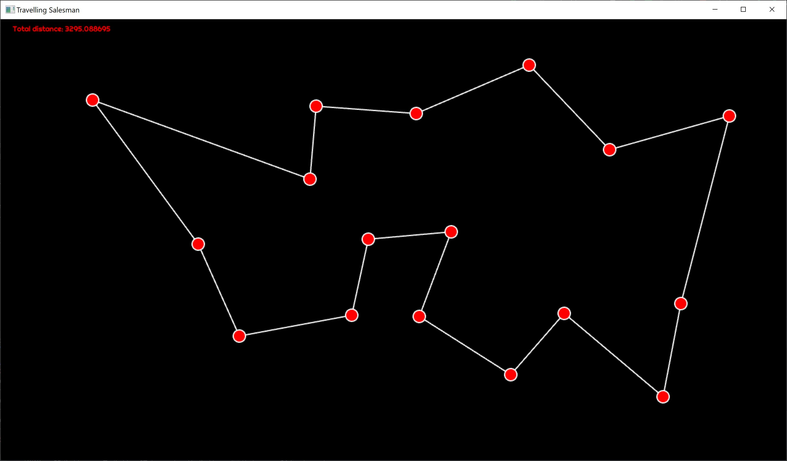
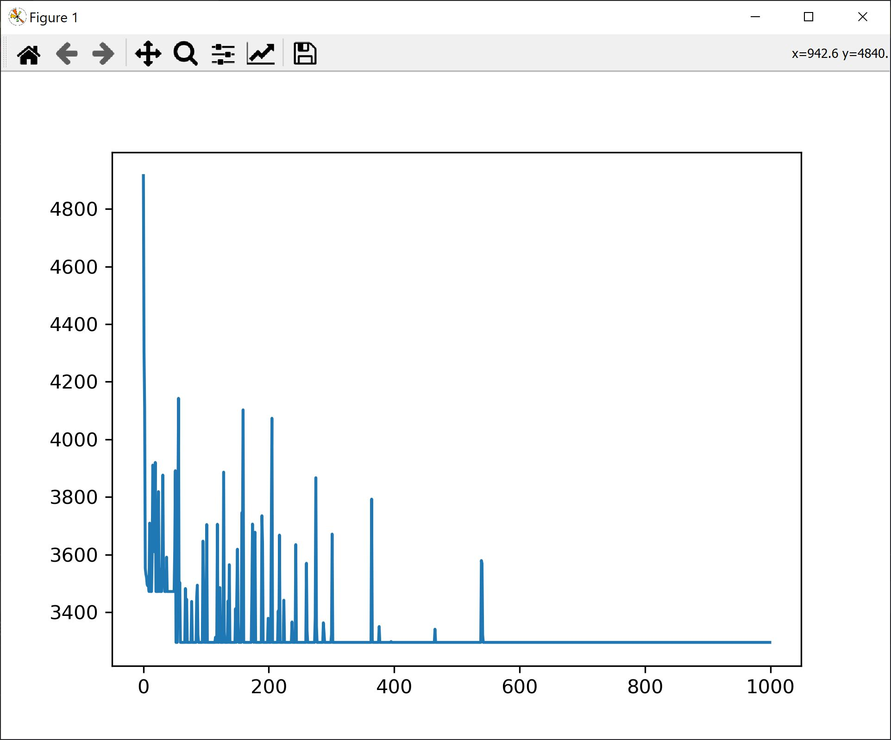

Simulated Annealing in Go
As Go is quickly becoming my favourite programming language, in this post we switch gears and implement an optimization algorithm - simulated annealing. We will solve the travelling salesman problem and, in the process, we will build a desktop app and a bare bones charting library.
Simulated Annealing
Simulated annealing is an optimization algorithm used for solving complex problems where direct algorithmic solutions are hard to find. In cases where gradient descent cannot be used because the optimization function is not continuous we need a different approach, mostly based on trial and error. In such a situation, the solution is to make random moves in the solution space and only accept those moves that offer an optimization over the current state. However such moves can easily converge to a local optimum and get stuck. Therefore, a mechanism in needed to allow escape from the local optimum. Simulated annealing offers a solution to this problem allowing random non-optimal moves to be accepted with decreasing probability, based on a temperature schedule. The solution is borrowed from metalurgy where the steel is forged under slow cooling in order to allow for an optimal alignment of metal particles for increased durability.
For our problem the metric we want to optimize is the total length of the path. In the picture below you can see such a layout with a shortest path determined by the algorithm.

For the very same configuration we see the total path length plotted for each iteration.It is interesting to see the inflection point where, after settling on a higher length equilibrium, an local optimum, and a random move, the total length resettles to another, global optimum. We also see how fewer and fewer random moves are accepted, with lower and lower distance increase.

Solution Implementation
The full code is listed below. In short, we are computing the algorithm on a separate thread from the main rendering thread. The config can be reset by pressing ESC. You can add new points to the path by simply clicking somewhere on the screen. The distance evolution over each iteration can be displayed by pressing the P key.
The algorithm can be tuned by adjusting:
- The total number of iterations
- The temperature decay function
- The function for the probability of acceptance of a bad move
The algorithm has also a back step - if after accepting a bad move a better move is not found in a predefined number of steps, we backtrack to the best known configuration.
The move is made by randomly selecting two edges and switching their ends between themselves. Once the swap has been performed, in order fo maintain the path consistency, all edges between the two end points are inverted. This happens in the ComputeNewPath function.
package main
import (
"GoAI/plt"
"fmt"
"github.com/tfriedel6/canvas/sdlcanvas"
"math"
"math/rand"
)
type Point struct {
X float64
Y float64
}
type Connection struct {
Start int
End int
}
func (p *Point) Subtract(other *Point) Point {
return Point{
X: p.X - other.X,
Y: p.Y - other.Y,
}
}
func (p *Point) DistanceTo(other *Point) float64 {
d := other.Subtract(p)
return math.Sqrt(d.X*d.X + d.Y*d.Y)
}
type ConnsCollection struct {
Points []Point
Conns []Connection
// map ending to index in Conn
endsIn []int
}
func (cc *ConnsCollection) BuildEndsInMap() {
if cc.endsIn == nil || len(cc.endsIn) != len(cc.Conns) {
cc.endsIn = make([]int, len(cc.Conns))
}
for i, cn := range cc.Conns {
cc.endsIn[cn.End] = i
}
}
func (cc *ConnsCollection) ComputeDistance() (float64, bool) {
d := 0.0
for _, c := range cc.Conns {
if c.Start >= len(cc.Points) || c.End >= len(cc.Points) {
return -1, false
}
d += cc.Points[c.Start].DistanceTo(&cc.Points[c.End])
}
return d, true
}
func (cc *ConnsCollection) DuplicateConnectionsTo(other **ConnsCollection) {
if *other == nil {
*other = &ConnsCollection{
Points: cc.Points,
Conns: make([]Connection, len(cc.Conns)),
endsIn: make([]int, len(cc.endsIn)),
}
}
copy((*other).Conns, cc.Conns)
copy((*other).endsIn, cc.endsIn)
}
func (cc *ConnsCollection) ComputeNewPath() float64 {
conns := cc.Conns
if len(conns) <= 1 {
return 0.0
}
i1 := rand.Int() % len(conns)
i2 := rand.Int() % len(conns)
if i1 == i2 {
i2++
if i2 == len(conns) {
i2 = 0
}
}
p1 := &conns[i1]
p2 := &conns[i2]
// swap edges
p1.End, p2.Start = p2.Start, p1.End
for idx := p1.End; idx != p2.Start; {
c := &conns[cc.endsIn[idx]]
c.Start, c.End = c.End, c.Start
idx = c.End
}
d, _ := cc.ComputeDistance()
return d
}
func InitConnectionsFromPoints(points []Point) *ConnsCollection {
c := ConnsCollection{
Points: points,
Conns: make([]Connection, 0, 20),
}
// crate a path where each point is travelled only once
for i := range c.Points {
s := i
e := i + 1
if e == len(c.Points) {
e = 0
}
c.Conns = append(c.Conns, Connection{
Start: s,
End: e,
})
}
c.BuildEndsInMap()
return &c
}
func TravellingSalesman(in <-chan []Point, out chan<- *ConnsCollection) {
for {
// read all points and only start the computation once I finished points
points := <-in
for len(in) > 0 {
points = <-in
}
var conns, conns2, resetPoint *ConnsCollection
conns = InitConnectionsFromPoints(points)
conns.DuplicateConnectionsTo(&conns2)
conns.DuplicateConnectionsTo(&resetPoint)
d, _ := conns.ComputeDistance()
dReset := d
MaxDriftFromGlobalMinimum := 10 * len(points)
countSinceReset := MaxDriftFromGlobalMinimum
MaxIterations := 100000
distanceEvolution := make([]float64, MaxIterations)
for i := 0; i < MaxIterations; i++ {
temperature := 0.1 * float64(MaxIterations-i) / float64(MaxIterations)
temperature = math.Pow(temperature, 5)
// switch two nodes
d2 := conns2.ComputeNewPath()
// found a better move
// or the temperature is high enough to accept other moves
if d2 < d || (d2-d)*temperature > rand.Float64() {
if d2 > d && i > (MaxIterations/100)*50 {
fmt.Printf("Accepted bad move: iter: %v, temp: %v, distance: %v\n", i, temperature, d2-d)
}
conns2.BuildEndsInMap()
conns2.DuplicateConnectionsTo(&conns)
d = d2
if d < dReset {
dReset = d
countSinceReset = MaxDriftFromGlobalMinimum
conns2.DuplicateConnectionsTo(&resetPoint)
}
} else if countSinceReset < 0 {
d = dReset
countSinceReset = MaxDriftFromGlobalMinimum
resetPoint.DuplicateConnectionsTo(&conns)
resetPoint.DuplicateConnectionsTo(&conns2)
//fmt.Println("Reset")
} else {
conns.DuplicateConnectionsTo(&conns2) // re-init conns2
}
countSinceReset--
// save for analysis
distanceEvolution[i] = d
}
plt.Reset()
plt.LinePlot(distanceEvolution, "Distance Evolution", 1000)
if d > dReset {
out <- resetPoint
} else {
out <- conns
}
}
}
func main() {
wnd, cv, err := sdlcanvas.CreateWindow(1280, 720, "Travelling Salesman")
if err != nil {
panic(err)
}
defer wnd.Destroy()
points := make([]Point, 0, 10)
connections := make([]Connection, 0, 10)
distance := 0.0
submitPoints := make(chan []Point, 100)
receiveConnections := make(chan *ConnsCollection)
go TravellingSalesman(submitPoints, receiveConnections)
wnd.MouseDown = func(btn int, x int, y int) {
// on mouse down add new points
points = append(points, Point{
X: float64(x),
Y: float64(y),
})
// send the points to be computed
submitPoints <- points
}
wnd.KeyDown = func(scancode int, rn rune, name string) {
switch name {
case "Escape":
points = make([]Point, 0, 10)
connections = make([]Connection, 0, 10)
distance = 0.0
case "KeyP":
plt.Execute() // show plot only when key is pressed
}
}
wnd.MainLoop(func() {
select {
case cc := <-receiveConnections:
if dd, ok := cc.ComputeDistance(); ok {
distance = dd
connections = cc.Conns
fmt.Printf("New paths with distance %f\n", distance)
}
default:
}
// background
w, h := float64(cv.Width()), float64(cv.Height())
cv.SetFillStyle("#000")
cv.FillRect(0, 0, w, h)
// circles
cv.SetStrokeStyle("#FFF")
cv.SetLineWidth(2)
cv.SetFillStyle(255, 0, 0)
for _, c := range connections {
cv.BeginPath()
cv.MoveTo(points[c.Start].X, points[c.Start].Y)
cv.LineTo(points[c.End].X, points[c.End].Y)
cv.Stroke()
}
for _, p := range points {
cv.BeginPath()
cv.Arc(p.X, p.Y, 10, 0, math.Pi*2, false)
cv.ClosePath()
cv.Fill()
cv.Stroke()
}
cv.SetFont("Righteous-Regular.ttf", 12)
cv.FillText(fmt.Sprintf("Total distance: %f", distance), 20, 20)
})
}
Easy Charting From Go
Since I couldn't find any charting library that met my needs, to be easy to use from a desktop application, I've decided to build my own. It relies on the excellent matplotlib library from python. The solution is simple: it generates a python script containing all the values I need to plot and, then, it launches that script in a separate process with its own window. For this we are using golang text templates to generate the script. I will extend the library for future use with other types of charts. Below you can see the code:
The template:
import matplotlib.pyplot as plt
{{range .}} {{if eq .Type "line"}}
values={{index .Values 0 | CompressByMean .Count | ToPythonArray}}
plt.plot(values)
{{end}} {{end}}
plt.show()
The code for generating the template:
package plt
import (
"fmt"
"io/ioutil"
"log"
"os"
"os/exec"
"strings"
"text/template"
)
type Plot struct {
Type string
Values [][]float64
Name string
Count int
}
var plots []Plot = nil
var tmpl *template.Template = nil
func min(a int, b int) int {
if a < b {
return a
} else {
return b
}
}
func compressByMean(count int, arr []float64) []float64 {
ret := make([]float64, count)
intvLen := len(arr) / count
cnt := float64(intvLen)
for i := 0; i < count-1; i++ {
upperLimit := (i + 1) * intvLen
lowerLimit := i * intvLen
ret[i] = arr[lowerLimit] / cnt
for j := lowerLimit + 1; j < upperLimit; j++ {
ret[i] += arr[j] / cnt
}
}
// last one is the last value - a hack for the simulated annealing problem
ret[count-1] = arr[len(arr)-1]
return ret
}
func toPythonArray(arr []float64) string {
sb := strings.Builder{}
sb.WriteString("[")
for i, v := range arr {
sb.WriteString(fmt.Sprintf("%f", v))
if i < len(arr) {
sb.WriteString(", ")
}
}
sb.WriteString("]")
return sb.String()
}
func init() {
log.Println(os.Getwd())
fn := template.FuncMap{
"CompressByMean": compressByMean,
"ToPythonArray": toPythonArray,
}
tmpl = template.Must(template.New("chart_template.gopy").Funcs(fn).ParseFiles("chart_template.gopy"))
}
func LinePlot(arr []float64, name string, count int) {
v := Plot{
Type: "line",
Values: make([][]float64, 1),
Name: name,
Count: count,
}
v.Values[0] = arr
plots = append(plots, v)
}
func Reset() {
// clear the plots
plots = nil
}
func Execute() {
var fileName string
func(fn *string) {
f, err := ioutil.TempFile("./plots", "plt*.py")
if err != nil {
fmt.Println(err)
return
}
defer f.Close()
*fn = f.Name()
if err := tmpl.Execute(f, plots); err != nil {
log.Panic(err)
}
Reset()
}(&fileName)
go func(fileName string) {
if out, err := exec.Command("python", fileName).Output(); err != nil {
log.Println(err)
log.Println(out)
} else {
log.Println(out)
}
}(fileName)
}